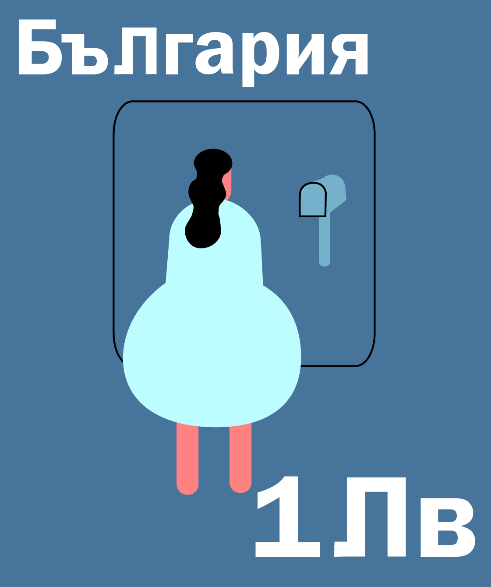

I designed two postage stamps for Bulgaria. This project was part of my intro to Illustrator. It is inspired by my time in Bulgaria, and being apart from my girlfriend. Outside of the office where I worked, I had minimal internet connection, so I wrote letters to communicate with her.